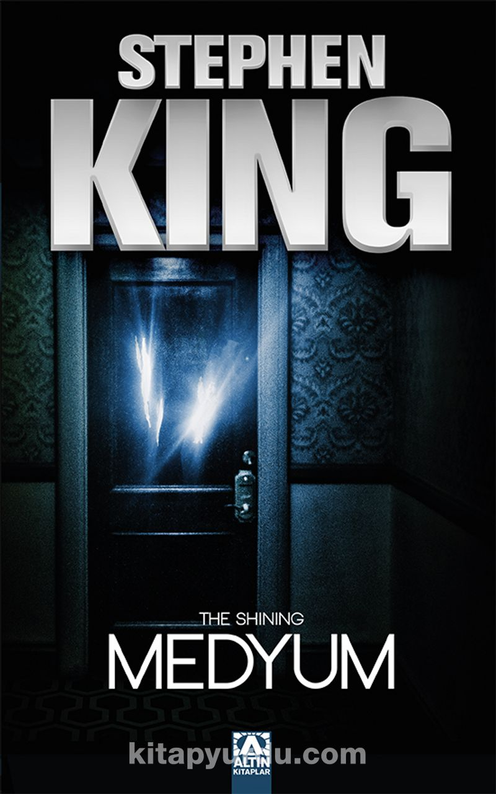

Mahşer

"Mahşer, macera, aşk, kehanet, alegori, fantezi ve realizm öğeleriyle harmanlanmış harika bir roman." The New York Times Book Review
Biyolojik denemeler yapılan bir kuruluştan kaçan biri, kısa süre sonra domino etkisiyle insanların yüzde doksan dokuzunu yok edecek mutasyona uğramış ölümcül bir grip mikrobunu yaymaya
başlar. Hayatta kalmayı başaran korku ve şaşkınlık içindeki bir avuç insan kendilerini kurtaracak bir lider arayışı içine girer. Ve iki aday ortaya çıkar... Colorado'da bir halkevi kurmakta ısrar
eden 108 yaşındaki hayırsever rahibe Abagail ve kötülükten başka bir şey düşünmeyen, kargaşadan mutlu olan şiddet yanlısı "kötü adam" Randall Flagg...
Yalnızca düşlerde var olabileceğini sandığımız karanlık bir hikâye...
70₺
Kubbenin Altında

119 Karayolu'nun aşağısında, Chester's Mill'de kıyamet kopmak üzere...
Güzel, güneşli bir günde küçük kasabanın dünyayla olan bütün bağlantısı görünmez bir güç tarafından kesilir. Uçaklar görünmez bir kalkana çarpar, şiddetli bir yağmur önüne geleni yıkıp yerle
bir eder. Kubbe yavaş yavaş alçalırken bahçevanın eli kopar. Arabalar infilak eder. Aileler birbirinden kaçar, herkes panik içindedir. Hiç kimse bu kalkanın nedenini, neden, ne zaman geldiğini ve
ne zaman ortadan kalkacağını bilemez. Bir Irak savaşı gazisi ve acımasız bir politikacı Kubbe'nin altındaki gücü ele geçirmeye kararlıdır, ama onların asıl düşmanı Kubbe' dir, çünkü zaman gittikçe azalmaktadır.
63₺
Medyum
Jack Torrance’ın Overlook Oteli’nde işe başlaması, yaşamında yepyeni bir sayfa açabilmesi için bulunmaz bir fırsattı. Mevsim sonunda müşterilerin uğramadığı bu eski otelin bekçiliğini
yaparken, ailesiyle bolca birlikte olabilecek ve romanını yazabilecekti. Ama sert kış havası kendisini göstermeye başlayınca, bu sakin mekân iyice ıssızlaştı... Uğursuz korkunç güçlerin
Overlook Oteli’ni sarmaya başladığını yalnızca eşsiz bir yeteneğe sahip olan beş yaşındaki Danny Torrance fark etti. “Edgar Allen Poe’dan bu yana ıssız mekânları, sınır tanımayan korkuları en iyi anlatan yazar.
30₺
Sadist

Ünlü yazar Paul Sheldon, bir dağ yolunda trafik kazası geçirir. Kar fırtınasının ortasında baygın ve yaralı bir haldeyken, yazarın romanlarının
saplantılı bir hayranı olan Annie Wilkes tarafından *kurtarılır*. Eski bir hemşire olan Wilkes’ın evine götürüp bir odaya kapattığı Sheldon neyle
karşı karşıya kaldığını anladığında, hayal gücünün sınırlarını zorlayan *sancılı* günler de başlamış olacaktır.
"Alo? Burası Sidewinder Polis Karakolu. Ben Memur Humbugagy." "Beni dinleyin, Memur Humbugagy. Çok dikkatle dinleyin ve sözümü kesmeyin.
Çünkü ne kadar zamanım olduğunu bilmiyorum. Adım Sheldon. Size Annie Wilkes`ın evinden telefon ediyorum. En aşağı iki haftadan beri
burada hapisim. Hatta belki de bir aydan beri hapis!" "Annie Wilkes mı?" "Hemen buraya gelin. Bir ambulans da yollayın. Ve Tanrı aşkına, kadın eve dönmeden buraya gelmeye çalışın!"
34₺
Enstitü

Minneapolis'in sakin banliyölerinden birinde yaşamakta olan Luke Ellis, bir gece yarısı evine giren davetsiz misafirler tarafından kaçırılır. Luke, penceresi olmayan fakat tıpkı kendisininkine
benzeyen bir odada gözlerini açar. Ve kapısını açıp dışarı çıktığında onun gibi özel yetenekleri yüzünden buraya getirilen birçok çocuğun odalarının sıralandığını görür. Enstitü... Özel
yeteneklere sahip çocukların tutulduğu bir hapishane, onlardan adeta intikam almaya yemin etmiş bir müdür ve insafsız personelin acı dolu yuvası. Burada vicdan azabı yok. Burası girişi olan
ama çıkışı olmayan bir cehennem...